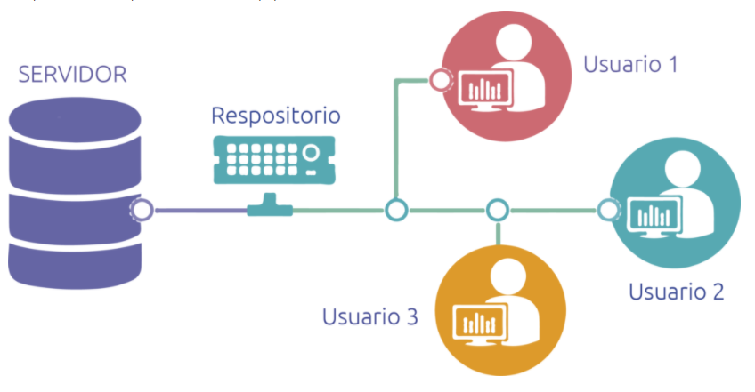

De acuerdo con Borrell, G. (2006). Se llama control de versiones a los métodos y herramientes disponibles para controlar todo lo referente a los cambios en el tiempo de un archivo.
Nettix. (2020). Sistema Control de Versiones. [Figura]. Recuperado de https://www.nettix.com.pe/blog/hosting-blog/que-es-un-sistema-de-control-de-versiones-y-como-me-ayuda
Directorio donde se trabajaran los archivos del proyecto a desarrollar.
Una rama Git es simplemente un apuntador móvil apuntando a una de esas confirmaciones. La rama por defecto de Git es la rama master.